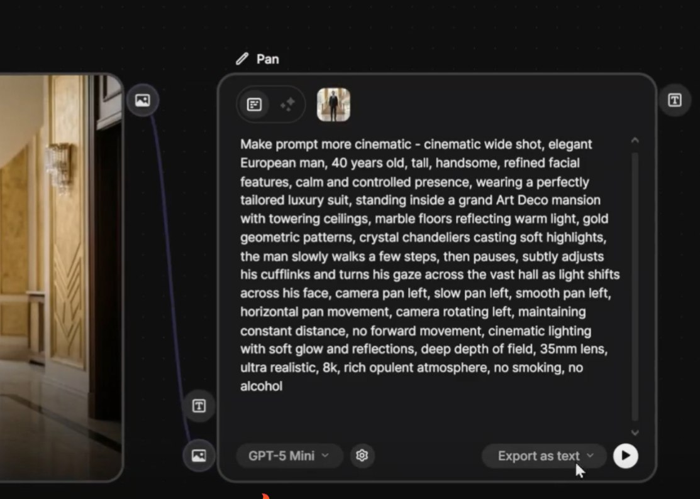

🎭 Mesmo Personagem, Múltiplos Planos
O maior desafio técnico da produção com IA: garantir que o personagem que aparece no plano 1 é o mesmo personagem no plano 7. Sem isso, seu filme parece uma colagem de protagonistas diferentes.
🔑 Estratégias de continuidade
- →Reference image: use sempre a mesma imagem base do personagem em todos os shots
- →Descrição idêntica: repita a descrição do personagem palavra por palavra em cada prompt
- →Wardrobe lock: mesmas roupas, mesmas cores, mesmo cabelo — sempre
- →Spaces do Freepik: use Spaces com character locking para garantir identidade

Assistant Node escrevendo prompt detalhado de personagem — descrição replicável é a base da continuidade
🔒 Locking da Imagem Inicial
É o truque mais simples e mais subutilizado do Video Generator. Em vez de gerar do zero, você trava o frame inicial — o movimento começa exatamente daquele ponto, herdando coerência do shot anterior.
🔧 Como funciona
- 1. Pegue o último frame do clipe anterior (exporte ou screenshot)
- 2. No Video Generator, abra "Start Image" e suba o frame
- 3. Escreva apenas o prompt de movimento (sem redescrever a cena)
- 4. O gerador cria a continuação a partir daquele ponto exato

Frame inicial travado: ponto de partida coerente

A continuação herda iluminação, paleta e composição
🎬 Combined Video Node
O Combined Video Node é o "editor interno" do Freepik — permite agrupar múltiplos clipes em uma única cena final, controlando ordem, transições e timing sem sair da plataforma.
🎞️ Vantagens do Combined Video
- ✓Você organiza a sequência inteira dentro do mesmo workspace
- ✓Mantém todos os clipes "vivos" para edição não-destrutiva
- ✓Permite re-render de clipes individuais sem refazer o conjunto
- ✓Garante coerência de export — mesma resolução, mesmo codec, mesma cor

Video Generator com múltiplos shots — workflow de produção dentro do próprio Freepik
🌈 Consistência de Estilo
Mesmo que personagem e ambiente mudem, o "look" do filme deve permanecer coeso: mesma paleta, mesma luz, mesma lente, mesmo grain. É o que faz parecer "o mesmo filme".
🎨 Paleta de cores
Mantenha 2-3 cores dominantes em todos os shots. Se o filme é teal/orange, todos os clipes precisam ter teal/orange — explicitamente no prompt.
💡 Iluminação
Se o ato é noturno, todos os shots noturnos. Não misture golden hour com night sem motivo narrativo claro.
📷 Lente fixa
Filmes com identidade visual forte tendem a usar uma única focal. 35mm o filme inteiro cria assinatura visual.
🎞️ Modificadores constantes
Se você usou "anamorphic, film grain" no clipe 1, use no 2, no 3 e no 4. Não troque a meio caminho.

Mood unificado: a mesma paleta e iluminação amarram o filme inteiro
🔗 Transições Suaves
Cortes feios são o sinal mais óbvio de "filme de IA". Transições suaves nascem do planejamento prévio — o último frame de um clipe deve "casar" com o primeiro do próximo.
🔗 Tipos de transição planejada

Transição planejada: o final de um clipe carrega elementos do próximo
🎯 Edição Controlada
A diferença entre desperdiçar 50 gerações e refinar com 3: aprender a iterar apenas no movimento de câmera, mantendo a imagem inicial e mudando só o prompt de movimento. É a maturidade de quem dirige.
✓ Iteração focada
- Trava a imagem inicial
- Muda só o prompt de movimento
- Refina velocidade e estilo separadamente
- 3-5 iterações resolvem qualquer shot
✗ Regenerar do zero
- Refaz a cena inteira a cada tentativa
- Personagem muda, ambiente muda
- Continuidade quebra a cada iteração
- Gasta créditos sem convergir
💡 Workflow profissional
Pense em camadas: 1) gere a imagem perfeita, 2) trave-a, 3) experimente movimentos, 4) trave o melhor, 5) ajuste velocidade e estilo. Cada camada é uma decisão isolada — assim você nunca perde o que já estava bom.

Resultado final cinematográfico: produzido com workflow controlado e iteração focada
✅ Resumo do Módulo 4.4
Próxima Trilha:
Trilha 5 — Produção: pipeline completo, edição final e workflow de exportação